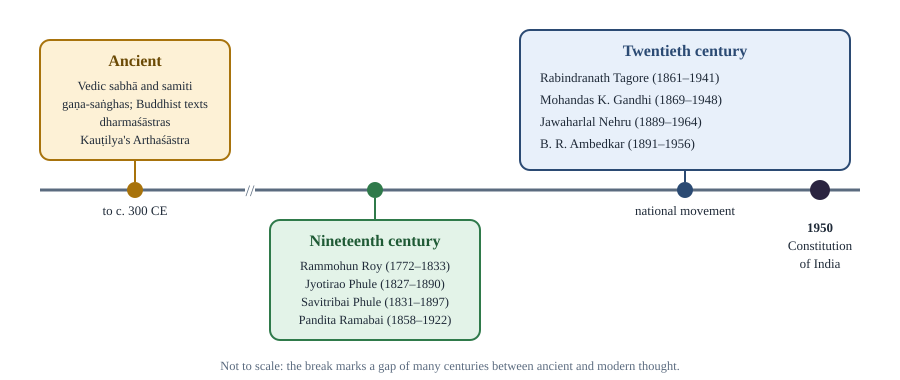
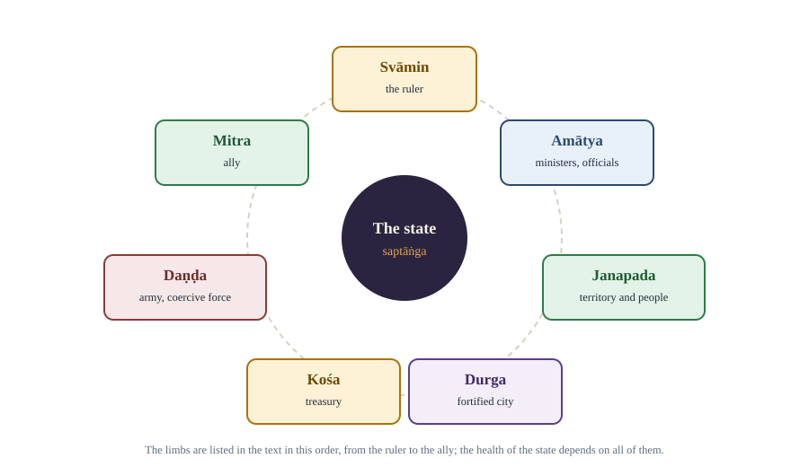

Chapter 13: Indian Political Thought¶
Kauṭilya, Gandhi, Ambedkar, Nehru, Tagore and the Indian conversation about power and justice
Learning outcomes
When you have finished this chapter you should be able to:
- describe the main themes of ancient Indian political thought: dharma, rājadharma, daṇḍa and early ideas of kingship by agreement;
- explain Kauṭilya's theory of the state in the Arthaśāstra: the seven limbs (saptāṅga), the maṇḍala theory and the four means (upāya), and the debate about its date and character;
- explain Gandhi's ideas of swaraj, satyagraha, ahiṃsā, sarvodaya, trusteeship and decentralisation, with criticisms;
- explain Ambedkar's critique of caste, his idea of social democracy and constitutional morality, and his conversion to Buddhism, with criticisms;
- explain Nehru's ideas of democracy, secularism, planning, non-alignment and scientific temper, with criticisms;
- explain Tagore's humanism, his critique of nationalism and his educational ideas;
- place other modern Indian thinkers on the map of ideas.
13.1 An Indian conversation¶
Indian thinkers have reflected on power, order and justice for well over two thousand years. Their writings answer the same basic questions as those of other traditions (Chapter 1): what the purpose of government is, what limits a ruler, how a society of many groups can live together, and when resistance is justified. They also bring distinctive concepts, and the modern thinkers in this chapter worked in a distinctive situation: a society of great religious, linguistic and caste diversity, under colonial rule, seeking both freedom from foreign domination and freedom from internal hierarchies.
This chapter treats each thinker fairly: it sets out what each argued in their own terms, and then the main criticisms made by others. The thinkers often disagreed sharply with one another, and their disagreements are among the most illuminating debates in modern political thought.

13.2 Ancient foundations¶
Dharma, daṇḍa and rājadharma¶
Three concepts run through ancient Indian political thought.
- Dharma has many meanings: cosmic order, moral law, duty and righteous conduct. Each person had duties according to their stage of life and, in the brahmanical texts, their varṇa (social order). Government was expected to uphold dharma.
- Daṇḍa literally means "rod" or "staff" and stands for coercive authority and punishment. Without daṇḍa, many texts warn, society would fall into mātsya-nyāya, the "law of the fishes", in which the big fish eat the small. This is an Indian counterpart to the Hobbesian state of nature (Chapter 2).
- Rājadharma is the duty of the king: to protect his subjects, maintain order, administer justice impartially, and promote their welfare. The king was not above dharma; a king who failed in his duty could be condemned, and some texts even justify resistance to a tyrant.
The dharmaśāstra texts, of which the Manusmṛti is the best known, set out law and the duties of the king within a hierarchical social order. They have been sharply criticised, by Ambedkar among many others, for sanctioning the caste hierarchy and the subordination of women.
Assemblies and kingship by agreement¶
The Vedic texts mention assemblies called the sabhā and samiti, whose exact composition and powers are debated by historians. Between about the sixth and fourth centuries BCE, Buddhist and other sources describe gaṇa-saṅghas: polities governed by assemblies of members of ruling clans rather than by a single king. Buddhist texts also contain an early contractual account of kingship: in the Aggañña Sutta, when people's growing greed leads to theft and disorder, they choose from among themselves a person to maintain order in return for a share of the harvest. He is called Mahāsammata, "the great elect". Historians caution against reading modern democracy into these sources, but they show that the idea of authority grounded in agreement was not foreign to Indian thought.
13.3 Kauṭilya and the Arthaśāstra¶
The text and its date¶
The Arthaśāstra ("the science of material well-being" or "of polity") is a long Sanskrit treatise on statecraft in fifteen books. Tradition attributes it to Kauṭilya, identified with Cāṇakya, the minister of Candragupta Maurya, founder of the Mauryan empire in the late fourth century BCE. The text was lost to modern scholarship until a manuscript reached the Sanskrit scholar R. Shamasastry, who published it in 1909 and an English translation in 1915.
Its date is debated. Many scholars, including Thomas Trautmann and Patrick Olivelle, have argued on linguistic and historical grounds that the text as we have it was compiled and revised over a long period, probably between the last centuries BCE and the early centuries CE, drawing on older material and earlier schools of statecraft that it often cites. Others defend a closer link with the Mauryan period. What is not in doubt is that the Arthaśāstra is the most systematic ancient Indian work on government.
Artha and the purposes of the state¶
The Arthaśāstra treats artha (material well-being, wealth and power) as the foundation on which dharma and kāma (pleasure) depend. Its subject is how a king acquires, protects and expands territory, and how he governs it for the welfare of his subjects. The science of government is daṇḍanīti, the science of the rod: the right use of coercion, neither too harsh nor too mild, so that subjects are protected and order maintained.
The text insists that the king's own good depends on that of his people. In Shamasastry's translation: "In the happiness of his subjects lies his happiness; in their welfare his welfare." The king is to be disciplined, educated, and constantly active; a large part of the text describes his daily timetable and his duty to hear the complaints of subjects.
The seven limbs of the state (saptāṅga)¶
Book 6 describes the state as having seven limbs (aṅga), or constituent elements, an organic conception in which the health of the whole depends on each part.

| Limb | Meaning | Comparison with modern elements of the state |
|---|---|---|
| Svāmin | The ruler or king | Government (the executive) |
| Amātya | Ministers and officials | Bureaucracy |
| Janapada | Territory with its people | Territory and population |
| Durga | Fortified city or fort | Defence installations, the capital |
| Kośa | Treasury | Public finance |
| Daṇḍa | Army; coercive force | Armed forces and police |
| Mitra | Ally | Foreign relations |
Table 13.1. The seven limbs of the state.
The list is often compared with the modern elements of the state (Chapter 2). Interestingly, it includes allies, recognising that a state exists among other states, and it does not include an abstract idea of sovereignty separate from the ruler.
The maṇḍala theory and foreign policy¶
The maṇḍala (circle) theory describes a king's international environment as concentric circles of states. At the centre is the vijigīṣu, the king who seeks to conquer or expand. His immediate neighbour is his natural enemy (ari); the state beyond the enemy is his natural ally (mitra), since it shares an enemy; beyond that lie the enemy's ally, and so on. The theory also considers a middle king (madhyama) and a neutral, more powerful king (udāsīna). The underlying principle, sometimes summarised as "the enemy of my enemy is my friend", is a realist analysis of the balance of power.
The text also describes six policies (ṣāḍguṇya) for relations with other states: peace (sandhi), war (vigraha), remaining stationary (āsana), marching (yāna), seeking shelter with another (saṃśraya) and the dual policy of peace with one and war with another (dvaidhībhāva), chosen according to whether the king is stronger, equal or weaker.
The four means (upāya)¶
To deal with opponents, the Arthaśāstra lists four means, in an order commonly read as from mildest to harshest: sāma (conciliation, persuasion), dāna (gifts, concessions), bheda (sowing dissension, dividing opponents) and daṇḍa (force). The text also describes in detail a system of spies and secret agents.
Interpretation and criticism¶
Because of its frank discussion of espionage, deception and the use of force, Kauṭilya is often compared with Machiavelli and called a realist. Max Weber remarked that, compared with the Arthaśāstra, Machiavelli's The Prince is harmless. But the comparison can mislead. The Arthaśāstra also gives detailed attention to welfare, administration, justice, regulation of trade and labour, care for the vulnerable, and the moral education and self-discipline of the ruler, and it places statecraft within a framework in which dharma remains important. Critics have objected to its acceptance of deception and secret killings as tools of state, and to its assumption of a hierarchical social order; admirers point to its sophisticated analysis of administration and of the relations between states.
Key idea
The Arthaśāstra sees the state as an organism of seven limbs, government as the disciplined use of daṇḍa for the protection and welfare of subjects, and foreign policy as the management of a circle (maṇḍala) of friends and enemies by four means and six policies.
13.4 The nineteenth-century awakening¶
Under colonial rule, Indian thinkers responded to Western ideas while re-examining their own traditions. Raja Rammohun Roy (1772–1833) campaigned against sati and for press freedom and modern education, and founded the Brahmo Samaj (1828). Jyotirao Phule (1827–1890), in Gulamgiri (Slavery, 1873), attacked caste hierarchy and brahmanical dominance, and with Savitribai Phule founded schools for girls and for children of oppressed castes. Swami Vivekananda (1863–1902) combined a universalist interpretation of Vedānta with a call for service to the poor and national regeneration. Early nationalists such as Dadabhai Naoroji analysed the "drain of wealth" from India to Britain. By the early twentieth century the national movement contained moderates who sought reform through constitutional means and extremists such as Bal Gangadhar Tilak, who demanded swaraj as a birthright.
13.5 Mohandas Karamchand Gandhi (1869–1948)¶
Life and method¶
Gandhi trained as a lawyer in London, worked in South Africa from 1893 to 1914, where he developed his method of non-violent resistance against racial discrimination, and returned to India to lead the national movement. Among his campaigns were Champaran (1917), the Non-Cooperation Movement (1920–22), the Salt March and civil disobedience (1930), and the Quit India Movement (1942). He wrote extensively, above all in his journals and in Hind Swaraj (1909), a short dialogue that contains the core of his political thought. He was assassinated in January 1948.
Swaraj¶
Swaraj means self-rule. For Gandhi it meant much more than political independence. In Hind Swaraj he argued that if Indians merely replaced English rulers with Indian ones while keeping the same institutions, they would have "English rule without the Englishman". True swaraj is self-rule in two senses: individual self-control, the mastery of one's desires, and collective self-government by self-reliant communities. It is a moral as well as political ideal.
Critique of modern civilisation¶
Hind Swaraj contains a radical critique of modern industrial civilisation, which Gandhi saw as driven by the multiplication of wants, material greed and the worship of the machine. Railways, lawyers and doctors, as institutions of modernity, came in for criticism. Gandhi did not reject all technology, but he insisted that machines should serve human beings rather than displace them, and favoured simple living and handicrafts, symbolised by the spinning wheel (charkha) and hand-spun cloth (khadi).
Satyagraha and ahiṃsā¶
Satyagraha ("holding firmly to truth" or "truth-force") is Gandhi's method of resisting injustice. Its basis is ahiṃsā, non-violence, understood not merely as refraining from violence but as active love, including love for the opponent. The satyagrahi seeks to convert the opponent, not to defeat him, by appealing to his conscience through willing self-suffering, and must be prepared to accept the consequences of disobedience. Gandhi distinguished satyagraha from passive resistance, which he saw as a weapon of the weak that does not exclude hatred. Its methods included non-cooperation, civil disobedience, strikes, boycotts and fasting. Gandhi's view of the relation between means and ends was central: impure means, he held, corrupt the ends they serve, so good ends must be pursued only by good means.
Sarvodaya, trusteeship and decentralisation¶
- Sarvodaya ("the welfare of all") was the title of Gandhi's Gujarati paraphrase (1908) of John Ruskin's Unto This Last. It expresses the principle that the good of the individual is contained in the good of all, that all work has equal value, and that the life of labour is the life worth living. Unlike utilitarianism's "greatest good of the greatest number", sarvodaya aims at the good of all, including the least.
- Trusteeship was Gandhi's answer to economic inequality. The wealthy should regard their surplus wealth as held in trust for society and use it for the common good. He hoped to achieve this by persuasion, but accepted that the state might regulate it.
- Decentralisation and gram swaraj. Gandhi envisaged India as a federation of largely self-sufficient, self-governing village republics, with power flowing upward from the village rather than down from the centre, an image he described as an "oceanic circle" rather than a pyramid. He was suspicious of the centralised state, which he saw as violence in concentrated form, and described himself at times as a philosophical anarchist whose ideal was a society that needed little government.
Religion, caste and untouchability¶
Gandhi was a deeply religious Hindu who held that all religions are true and all imperfect, and who worked throughout his life for Hindu–Muslim unity. He campaigned against untouchability, which he called a sin, calling the communities subjected to it Harijan ("people of God"), a name later rejected by many Dalits as patronising. His views on caste changed over his life: in earlier writings he defended an idealised varṇa system of hereditary occupations without hierarchy, while opposing untouchability; later he became more critical of caste restrictions.
Criticisms¶
- Ambedkar argued that Gandhi's defence of varṇa and his opposition to separate electorates for the depressed classes in 1932 (which led to the Poona Pact, providing instead for reserved seats in joint electorates) reflected a reformist paternalism that left caste intact. Calling for a change of heart among caste Hindus, he argued, was no substitute for legal rights and political power for the oppressed.
- Modernisers, including Nehru, regarded Gandhi's critique of industrial civilisation and his idealisation of village life as unrealistic for a poor country that needed industry, science and modern institutions.
- Marxists argued that trusteeship left property relations untouched and relied on the goodwill of the rich.
- Critics questioned whether non-violence could succeed against opponents without a conscience to appeal to, and whether it was suitable for defending a state.
- Feminist scholars have debated Gandhi's legacy: he drew women into public political life in large numbers, but also idealised women's self-sacrifice and held views on sexuality that many find troubling.
Gandhi's admirers reply that his ideas of non-violent resistance, means and ends, and decentralised self-government have influenced movements across the world, including the American civil rights movement, and that his critique of consumerism and centralisation has gained relevance with environmental concerns.
13.6 B. R. Ambedkar (1891–1956)¶
Life¶
Bhimrao Ramji Ambedkar was born into a family of the Mahar community, which was treated as untouchable. He experienced caste discrimination throughout his education, yet earned doctorates from Columbia University and the London School of Economics and qualified as a barrister. He led movements for the rights of the depressed classes, such as the Mahad satyagraha (1927) to assert the right to draw water from a public tank, founded political parties, served as Labour Member in the Viceroy's Executive Council, became the first Law Minister of independent India, and chaired the Drafting Committee of the Constituent Assembly. In 1956, shortly before his death, he converted to Buddhism with a very large number of followers in Nagpur.
The critique of caste¶
In Annihilation of Caste (1936), a speech written for an anti-caste conference in Lahore but never delivered because the organisers objected to its content, Ambedkar argued that caste is not merely a division of labour but a division of labourers, a hierarchy imposed by birth that prevents people from choosing occupations according to their abilities. Caste destroys public spirit and the sense of community, since it makes people loyal to their caste rather than to the whole society. Because caste is sanctioned by religious texts that people regard as sacred, he argued, it cannot be abolished without challenging the authority of those texts. Reform of untouchability alone is insufficient; what is needed is the annihilation of the caste system.
Ambedkar's ideal society was one based on liberty, equality and fraternity, which he said he derived not from the French Revolution but from the teachings of the Buddha. Fraternity, the sense of common brotherhood, was in his view the foundation of the other two; without it, liberty and equality would be no deeper than coats of paint.
Social democracy and constitutional morality¶
For Ambedkar, democracy was not merely a form of government but a mode of associated living. Political democracy (one person, one vote) cannot last unless there lies at its base social democracy, a way of life that recognises liberty, equality and fraternity as principles of life. In his final speech to the Constituent Assembly on 25 November 1949 he warned:
B. R. Ambedkar, Constituent Assembly, 25 November 1949
"On the 26th of January 1950, we are going to enter into a life of contradictions. In politics we will have equality and in social and economic life we will have inequality."
In the same speech he gave three warnings: that once constitutional methods were available, methods such as civil disobedience and satyagraha should be abandoned as the "grammar of anarchy"; that citizens should not lay their liberties at the feet of even a great man, since in politics hero-worship is a sure road to degradation and eventual dictatorship; and that political democracy must be made a social democracy.
Ambedkar also stressed constitutional morality, a phrase he took from the historian George Grote: a paramount reverence for the forms of the constitution, combined with freedom of criticism and restraint in the use of power. Constitutional morality, he observed, is not a natural sentiment; it has to be cultivated. He argued that a constitution's success depends on the spirit of those who work it.
State socialism and rights¶
In States and Minorities (1947), a memorandum submitted to the Constituent Assembly, Ambedkar proposed state socialism: state ownership of key industries and agricultural land, to be written into the constitution so that it could not be undone by ordinary legislative majorities. Though not adopted in this form, the proposal shows his concern that formal rights mean little without economic security. He favoured strong safeguards for minorities and for Scheduled Castes, including reserved representation, and saw the state and the law as instruments of social transformation.
Buddhism¶
After decades of struggle, Ambedkar announced in 1935 that although he had been born a Hindu he would not die one. He studied many religions and chose Buddhism, which he interpreted as a rational, ethical and egalitarian faith centred on human dignity and social justice, in The Buddha and His Dhamma (published 1957). His conversion in 1956 inspired a large Buddhist movement among Dalits.
Criticisms and assessment¶
- Gandhi replied to Annihilation of Caste by defending varṇa, purged of hierarchy, as distinct from caste, and argued that the scriptures should be judged by the conduct of their best exponents; Ambedkar answered that this ideal had never existed in practice.
- Some critics argued that Ambedkar's emphasis on separate political safeguards for the depressed classes risked dividing the national movement; his defenders reply that the national movement had too often subordinated the interests of the oppressed to those of caste elites.
- His warning against the "grammar of anarchy" is debated by those who think non-violent protest remains important in a constitutional democracy.
- Others have asked whether his reliance on the state and law to transform society underestimates the persistence of social prejudice, a concern he himself shared.
Ambedkar is now widely recognised as one of the most important political thinkers of modern India, whose analysis of the relation between political, social and economic democracy has influence far beyond India.
13.7 Jawaharlal Nehru (1889–1964)¶
Life and writings¶
Jawaharlal Nehru, educated at Harrow, Cambridge and the Inner Temple, became one of the leaders of the national movement and a close associate of Gandhi, and served as the first Prime Minister of India from 1947 until his death in 1964. His major writings, mostly composed in prison, include Glimpses of World History (1934), An Autobiography (1936) and The Discovery of India (1946). His speech on the eve of independence, on the night of 14–15 August 1947, is remembered for the phrase "tryst with destiny".
Main ideas¶
- Democracy. Nehru was committed to parliamentary democracy, universal adult franchise, civil liberties and the rule of law, and to building institutions such as a free press, an independent judiciary and regular elections.
- Secularism. For Nehru, secularism meant a state that treats all religions equally and does not identify with any, and a public life guided by reason. He saw communalism of all kinds as a threat to Indian unity. The Discovery of India presents India as a palimpsest on which successive cultures had written without erasing what came before: a unity built from diversity.
- Socialism and planning. Nehru was influenced by Fabian socialism and impressed by Soviet economic planning, while rejecting its authoritarianism. He advocated a mixed economy with a leading role for the public sector in heavy industry and infrastructure, and economic planning through the Planning Commission (1950) and the Five-Year Plans, with the aim of rapid industrialisation and a reduction of poverty and inequality, by democratic means.
- Scientific temper. Nehru wanted Indians to adopt a scientific temper, an attitude of inquiry, openness to evidence and rejection of dogma and superstition, which he discussed in The Discovery of India. He promoted scientific and technical institutions.
- Internationalism and non-alignment. Nehru opposed colonialism and racial discrimination worldwide and refused to join either bloc in the Cold War. Non-alignment, which he helped to develop with leaders of other newly independent states, meant independence of judgement in foreign policy, not neutrality on every issue. With China he agreed the Panchsheel (five principles of peaceful coexistence) in 1954.
Criticisms¶
- Economic policy. Critics argue that the emphasis on central planning and the public sector led to inefficiency and what was later called the "licence raj", slowing growth; defenders reply that it built a base of heavy industry, infrastructure and scientific capacity in a poor country with little private capital.
- Gandhian critics argued that Nehru's large-scale industrialisation abandoned Gandhi's vision of decentralised village development.
- Foreign policy. The war with China in 1962 led critics to question the realism of his foreign policy.
- Secularism. Nehruvian secularism has been criticised from different directions: by some for being imposed by a Westernised elite and insufficiently rooted in Indian religious traditions (Chapter 10), by others for being applied inconsistently.
- Centralisation. Some argue that his era concentrated power in the central government and in the dominant party.
13.8 Rabindranath Tagore (1861–1941)¶
Life¶
Rabindranath Tagore, poet, novelist, composer, painter and educator, was the first non-European to receive the Nobel Prize in Literature (1913), largely for the English version of Gitanjali. He composed the songs that became the national anthems of India and Bangladesh. He took part in the protests against the partition of Bengal in 1905 but withdrew when the Swadeshi movement turned to violence and coercion. He renounced his British knighthood in protest against the massacre at Jallianwala Bagh in 1919.
Humanism and the critique of nationalism¶
Tagore's political thought centres on universal humanism: the belief that the highest truth is the unity of all humanity, and that cultures should meet in mutual respect and learning. His critique of the Nation as an organisation of power and commerce (Chapter 9) followed from this: aggressive nationalism divides humanity and makes people instruments of the state. His novel Ghare Baire (The Home and the World, 1916) dramatises the dangers of a nationalism that becomes intolerant and coercive.
One of his best-known poems, from Gitanjali, expresses his vision of freedom:
Rabindranath Tagore, Gitanjali (English version, 1912), poem 35
"Where the mind is without fear and the head is held high;
Where knowledge is free;
Where the world has not been broken up into fragments by narrow domestic walls ...
Into that heaven of freedom, my Father, let my country awake."
Education¶
Tagore believed that education should develop the whole person in freedom and in harmony with nature and with other cultures, not drill pupils in rote learning for examinations. He founded a school at Santiniketan in 1901 and the university Visva-Bharati in 1921, whose motto (from a Sanskrit text) expresses the ideal of a place where the whole world meets in a single nest.
Tagore and Gandhi¶
Tagore and Gandhi admired each other (Tagore is often credited with popularising the title Mahatma for Gandhi), but they disagreed openly. In 1921 Tagore questioned the Non-Cooperation Movement, the burning of foreign cloth and the cult of the charkha, warning that they appealed to emotion rather than reason, encouraged a narrow rejection of the West and demanded uniform obedience. Gandhi replied that non-cooperation was not hostility to the West but refusal to cooperate with evil, and that the spinning wheel was a means of livelihood and self-reliance for the poor. The exchange is a classic debate about nationalism, reason and mass politics.
Criticisms¶
Critics, including some contemporaries in the national movement, regarded Tagore's universalism as idealistic and politically ineffective in the face of colonial rule, and his aristocratic background as distancing him from mass politics. Admirers reply that his warnings against intolerant nationalism, and his insistence on freedom of mind, have lasting value.
| Gandhi | Ambedkar | Nehru | Tagore | |
|---|---|---|---|---|
| Central value | Truth and non-violence | Equality and fraternity; human dignity | Democracy, secularism, progress | Freedom of mind; universal humanism |
| View of caste | Opposed untouchability; earlier defended an idealised varṇa | Annihilation of caste | Opposed caste as backward | Criticised caste and social rigidity |
| Economy | Village self-sufficiency, trusteeship, khadi | State socialism; economic rights | Mixed economy, planning, industry | Rural reconstruction, cooperation |
| State | Suspicious of the centralised state; decentralisation | Strong constitutional state as instrument of social change | Strong democratic state; planning | Sceptical of the Nation-state as a machine of power |
| Modernity | Critic of industrial civilisation | Embraced reason and modern law | Embraced science and industry | Open to the meeting of East and West |
Table 13.2. Four modern Indian thinkers compared.
13.9 Other voices¶
Modern Indian political thought is much wider than these four thinkers. A brief map, stated neutrally:
- Aurobindo Ghose (1872–1950) moved from revolutionary nationalism to a spiritual philosophy of human evolution.
- V. D. Savarkar (1883–1966) formulated the idea of Hindutva in Essentials of Hindutva (1923), defining Indian nationhood in terms of a shared Hindu cultural identity; supporters see it as cultural nationalism, critics as exclusive of religious minorities.
- Muhammad Iqbal (1877–1938), poet and philosopher, developed ideas of Muslim selfhood and community that influenced the demand for a separate homeland.
- E. V. Ramasamy "Periyar" (1879–1973) led the Self-Respect Movement from 1925 against caste, brahmanical dominance and religious orthodoxy, and for rationalism and women's rights.
- M. N. Roy (1887–1954) moved from communism to radical humanism, emphasising individual freedom and rationalism.
- Ram Manohar Lohia (1910–1967) developed a socialism attentive to caste and gender, and Jayaprakash Narayan (1902–1979) called in the 1970s for "total revolution", a moral, social and political transformation.
Worked example 13.1: Four thinkers, one question
Question. How should a newly independent India deal with the poverty of its villages?
Gandhi would answer: rebuild village self-reliance through handicrafts, khadi, local self-government and trusteeship, and limit large-scale industry that displaces labour.
Nehru would answer: plan for rapid industrialisation, build dams, steel plants and scientific institutions, and use a mixed economy to raise national income and reduce poverty.
Ambedkar would answer: poverty in villages is bound up with caste; the village, which he described in the Constituent Assembly as a sink of localism and a den of ignorance, is not a model to be idealised. Secure legal rights, land reform, state ownership of key resources, education and urban opportunity for the oppressed.
Tagore would answer: revive village life through education, cooperation and the creative participation of villagers themselves, as he attempted in his rural reconstruction work at Sriniketan.
The disagreement shows how different values (self-reliance, development, equality, creative freedom) lead to different policies, and why the Constitution of India contains elements of several visions, such as panchayats, planning, Fundamental Rights and the abolition of untouchability.
Summary
- Ancient Indian thought developed the concepts of dharma, daṇḍa and rājadharma, the fear of mātsya-nyāya, assemblies and gaṇa-saṅghas, and the Buddhist story of Mahāsammata, a ruler chosen by agreement.
- The Arthaśāstra, attributed to Kauṭilya and probably compiled over several centuries, describes the state's seven limbs, the science of daṇḍanīti, the maṇḍala theory of foreign relations, six policies and four means (sāma, dāna, bheda, daṇḍa), with a strong concern for the welfare of subjects.
- Gandhi's thought centres on swaraj as self-rule, satyagraha founded on ahiṃsā, the unity of means and ends, sarvodaya, trusteeship and decentralised village self-government, together with a critique of modern civilisation; he was criticised by Ambedkar, modernisers and Marxists.
- Ambedkar argued for the annihilation of caste, for liberty, equality and fraternity, for social and economic democracy as the base of political democracy, and for constitutional morality; he converted to Buddhism in 1956.
- Nehru stood for parliamentary democracy, secularism, a planned mixed economy, scientific temper and non-alignment; critics question his economic and foreign policies.
- Tagore's universal humanism led him to criticise aggressive nationalism and rote education; his debate with Gandhi in 1921 is a classic exchange on nationalism and reason.
13.10 Exercises¶
Exercise 1
What is mātsya-nyāya, and how does it compare with Hobbes's state of nature?
Answer
Mātsya-nyāya, "the law of the fishes", is the condition in which, without daṇḍa (coercive authority), the strong devour the weak as big fish eat small ones. Like Hobbes's state of nature, it describes the disorder that would exist without government and justifies coercive authority as the remedy. Unlike Hobbes's account, it appears within a framework where the ruler remains bound by dharma.
Exercise 2
Name the seven limbs of the state in the Arthaśāstra and give a modern equivalent for any three.
Answer
Svāmin (ruler), amātya (ministers), janapada (territory and people), durga (fort), kośa (treasury), daṇḍa (army, coercive force), mitra (ally). Modern equivalents: svāmin = executive government; amātya = bureaucracy; janapada = territory and population; kośa = public finance; daṇḍa = armed forces and police; mitra = foreign relations.
Exercise 3
Explain the maṇḍala theory and the four upāya.
Answer
The maṇḍala theory places the expanding king (vijigīṣu) at the centre of circles of states: his neighbour is a natural enemy, the state beyond the neighbour a natural ally, and so on, with middle and neutral kings also considered. The four upāya for dealing with others are sāma (conciliation), dāna (gifts), bheda (sowing dissension) and daṇḍa (force).
Exercise 4
Why did Gandhi say that Indians might gain "English rule without the Englishman"? What did he mean by swaraj instead?
Answer
He meant that if Indians merely replaced British rulers while keeping the same institutions and values of modern industrial civilisation, India would not be truly free. Swaraj for Gandhi meant self-rule in two senses: individual self-control over one's desires, and collective self-government by self-reliant, decentralised communities, a moral as well as political freedom.
Exercise 5
How did Ambedkar distinguish political democracy from social democracy, and why did he think the first depended on the second?
Answer
Political democracy is one person, one vote, one value; social democracy is a way of life that recognises liberty, equality and fraternity in social relations. Ambedkar argued that political equality could not last amid social and economic inequality, the "life of contradictions" he described on 25 November 1949: those denied equality would eventually blow up the structure of political democracy.
Exercise 6
What did Ambedkar mean by "constitutional morality"?
Answer
Borrowing from George Grote, he meant a paramount reverence for the forms of the constitution, combined with freedom to criticise those in power and restraint in the use of power. He stressed that it is not natural but must be cultivated, and that a constitution's success depends on those who work it.
Exercise 7
Summarise the debate between Tagore and Gandhi in 1921.
Answer
Tagore questioned the Non-Cooperation Movement, the burning of foreign cloth and the cult of the charkha, arguing that they appealed to emotion over reason, encouraged a narrow rejection of the West and demanded uniform obedience. Gandhi replied that non-cooperation was refusal to cooperate with evil, not hostility to the West, and that the spinning wheel offered livelihood and self-reliance to the poor.
Exercise 8
State two features of Nehru's political thought and one criticism of each.
Answer
Any two: (1) Planning and a mixed economy: criticised for inefficiency and the "licence raj". (2) Secularism: criticised as elite-driven or inconsistently applied. (3) Non-alignment: criticised for lack of realism, especially after 1962. (4) Scientific temper and industrialisation: criticised by Gandhians for abandoning village-based development.
13.11 Quiz¶
Check yourself: Indian political thought
Exercise 1
Who first published the text of the Arthaśāstra in modern times (1909)?
- R. Shamasastry
- Patrick Olivelle
- Max Weber
- B. R. Ambedkar
Answer
R. Shamasastry
Exercise 2
Match each upāya with its meaning.
| A | B |
|---|---|
| Sāma | Sowing dissension |
| Dāna | Force |
| Bheda | Conciliation |
| Daṇḍa | Gifts |
Answer
Sāma — Conciliation; Dāna — Gifts; Bheda — Sowing dissension; Daṇḍa — Force
Exercise 3
In which work did Gandhi set out his idea of swaraj and his critique of modern civilisation?
- Hind Swaraj
- Annihilation of Caste
- The Discovery of India
- Nationalism
Answer
Hind Swaraj
Exercise 4
Ambedkar said that caste is not merely a division of labour but a division of
- wealth
- labourers
- territory
- religions
Answer
labourers
Exercise 5
In which year did Ambedkar convert to Buddhism?
Answer
1956
Exercise 6
Which agreement of 1932 replaced separate electorates for the depressed classes with reserved seats in joint electorates?
- Lucknow Pact
- Poona Pact
- Gandhi–Irwin Pact
- Panchsheel
Answer
Poona Pact
Exercise 7
Which thinker founded Visva-Bharati in 1921?
- Gandhi
- Nehru
- Tagore
- Vivekananda
Answer
Tagore
Exercise 8
Match each thinker with a concept.
| A | B |
|---|---|
| Gandhi | Scientific temper |
| Ambedkar | Maṇḍala theory |
| Nehru | Trusteeship |
| Kauṭilya | Constitutional morality |
Answer
Gandhi — Trusteeship; Ambedkar — Constitutional morality; Nehru — Scientific temper; Kauṭilya — Maṇḍala theory